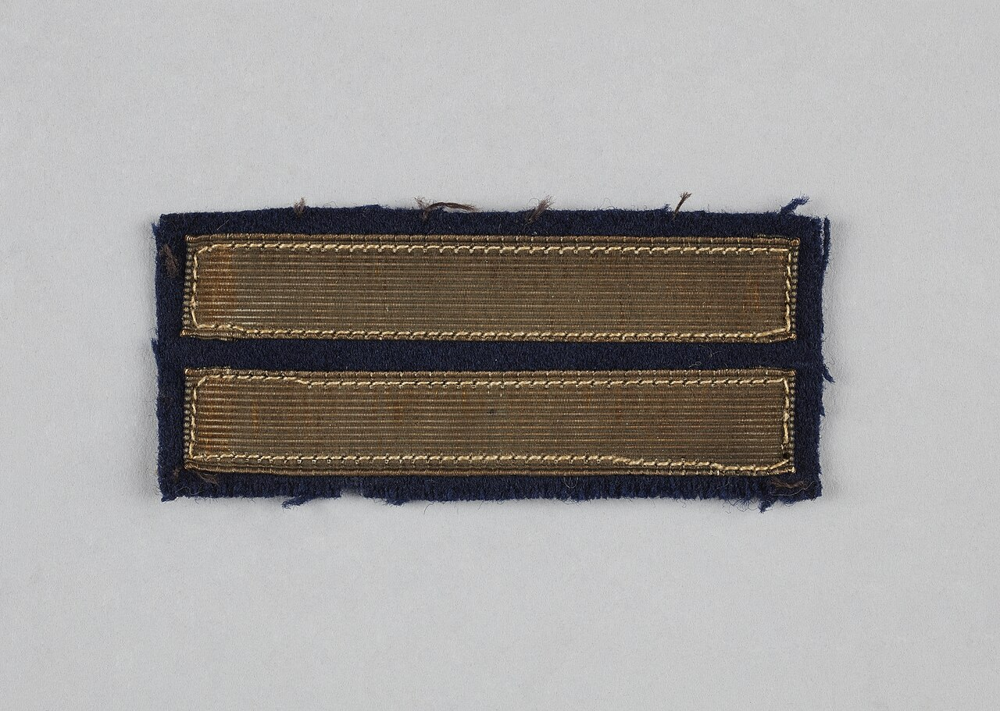

看见的
- 深蓝底的矩形纺织布章
- 两条横向金色条带
- 条带有细密纹理和浅色缝线
- 布料边缘有轻微磨损
- 浅灰背景，均匀漫射光

一次真实、单样本、单模型调用的 V0-Min 体验抽查。系统准确描述主体与光线，把不确定身份留在“未知”中，没有借用网页元数据作弊。
Gemma 4 26B · 本机 loopback · 1 张图 · 1 次调用 · 0 元外部成本
这是产品真实公开路径返回的英文提示词，没有经过人工润色。下方中文仅用于阅读参考，不计入模型输出。
“A close-up shot of a rectangular dark blue fabric patch featuring two horizontal, ribbed gold-colored bars outlined with fine stitching, centered on a plain light gray background under even, diffused lighting.”
人工中文参考：一张近距离拍摄的物件照片：一块深蓝色矩形布章，上面有两条横向、带细密纹理的金色条带，边缘以精细缝线勾勒；主体居中放置在纯浅灰背景上，使用均匀柔和的漫射光。
结构化输出把视觉事实、语义推断和未知信息拆开。这个边界比“猜中具体物件名称”更重要。
馆藏说明确认它是 1939–1945 年法国的中尉双杠标识。模型没有看到这段元数据，却合理推断为军衔标识，并克制地没有编造国别、年代或军种。
主体、颜色、数量、纹理、构图与光线都准确；“军衔标识”的推断与馆藏事实一致；未知项处理克制。
中文提示词和 negative 为空；技术字段没有把已经识别到的灯光与构图继续结构化；单张静物不能代表人物、复杂场景或文字密集图的表现。
本次为体验抽查，不改变 V0-Min 已封存的正式门禁。授权在终态后已自动过期。
Wikimedia Commons 文件页
许可：CC0 1.0
作者：匿名 / 未知
馆藏：巴黎解放博物馆—勒克莱尔将军博物馆—让·穆兰博物馆
样本 SHA-256：b129104984043dfbc4338dd16652d5e6440ea61936c61db434259a57a291e5b2
候选：1d48142b95466954ca4da264fa06762abf1522f2
原始机器结果：result.json